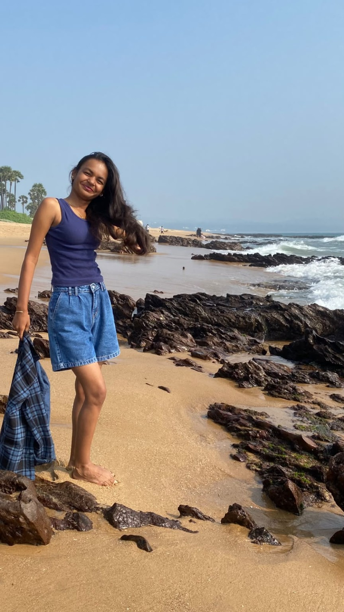
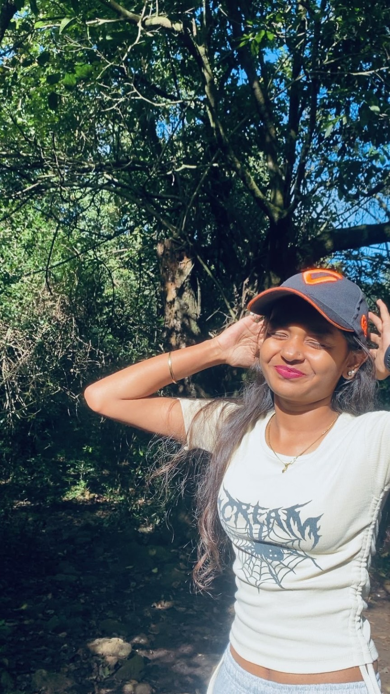
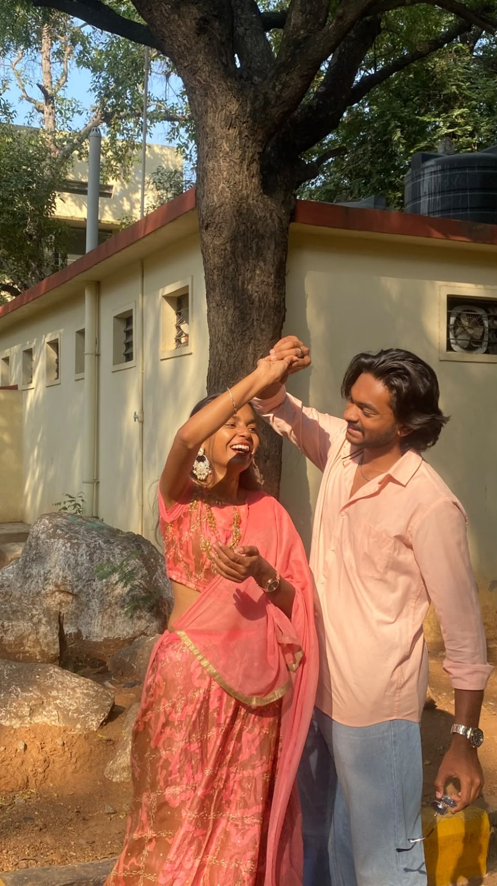
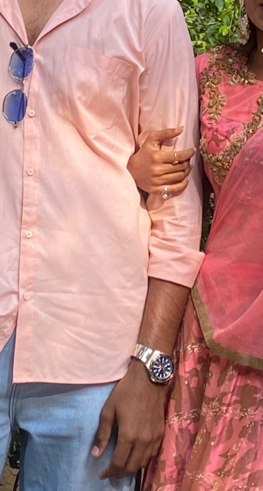
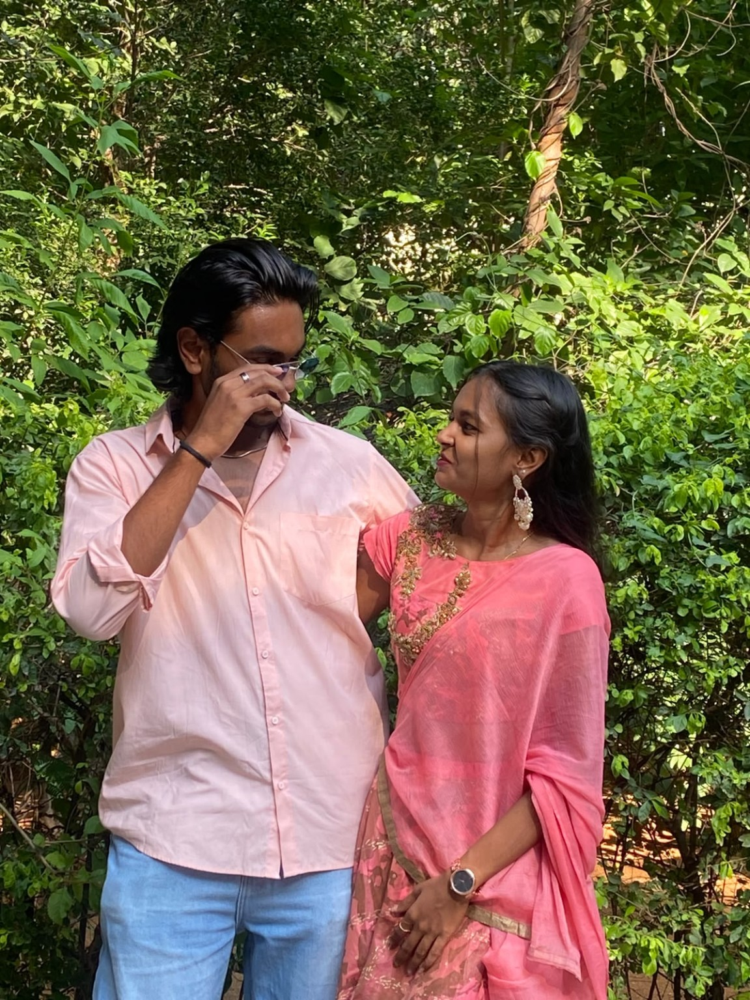
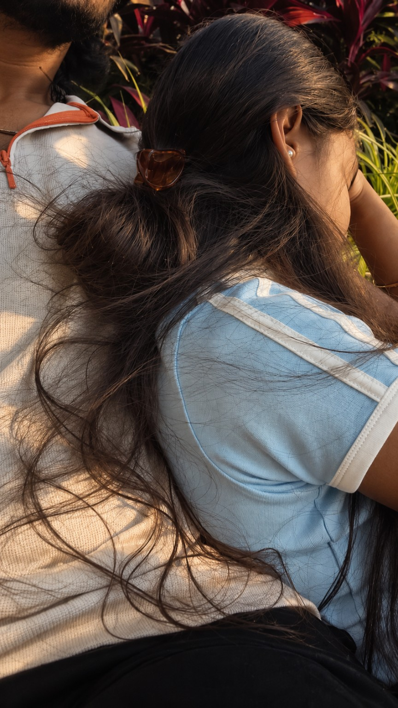
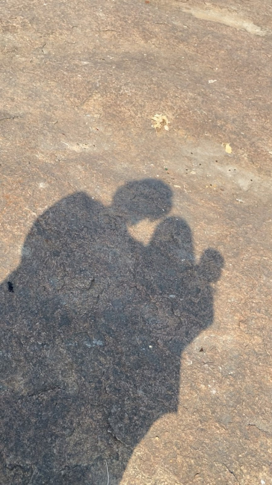
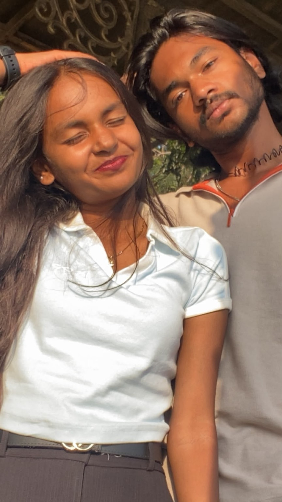
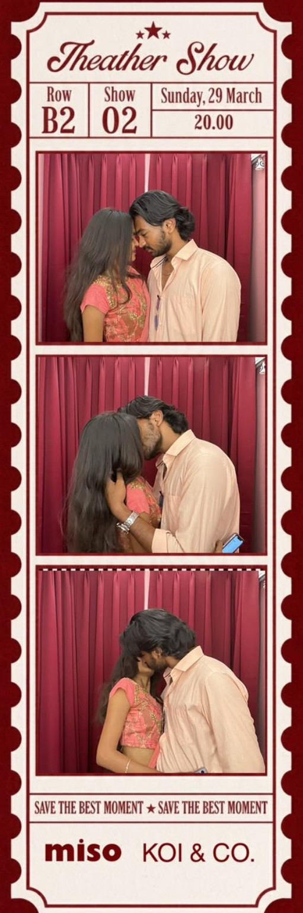

You’ve read the pages I wrote with my own hands. This is something different: a few photographs, a few moments, and the little things I hope you never forget.
Some things are written in sand. Some stay with me.
I like that our story is made up of ordinary moments that slowly became anything but ordinary. A college day, a conversation, a little curiosity — none of it announced what was coming. Looking back, even the smallest beginnings feel worth keeping.
Not every important story begins with a grand moment. Ours had its own quiet way of starting.
02 / 10 · a little moment of you
A little moment of you

A day, a beach, and that smile.
I could fill pages talking about the big things, but I keep coming back to photographs like this. You being completely yourself. The way you smile, the way you carry a moment without even trying. I hope you know how many little details about you stay with me.
03 / 10 · the little things
The little things I notice

A tiny detail, saved in my head.
I meant it when I wrote that I notice the little things. Your expressions, the way your mood changes, the way you laugh, the way you sometimes get shy and then act like nothing happened. I don't need every moment to be extraordinary. I like noticing you in the ordinary ones.
Sometimes I remember a tiny expression more clearly than the whole day around it.
04 / 10 · memories on repeat
The memories I replay

One of those moments I wish I could pause.
There are moments I wish I could replay without changing a single thing. The laughter, the way we get caught up in our own little world, and the happiness that shows up on your face. This is one of those memories I want to keep close.
05 / 10 · details that stay
The smallest details matter

Even the details have a story.
I remember details because they belong to moments that matter to me. A hand resting on an arm, the jewellery, the colours, the little things someone else might not even notice. Somehow, they become part of the memory too.
06 / 10 · feeling understood
A place where I feel understood

Being seen, without having to explain everything.
One of the things I value most about us is the comfort we've found in being honest. The conversations where I can tell you what's on my mind, the way you listen, and how you try to understand. I hope I keep giving you that same space — to speak freely, to be yourself, and to feel heard.
I don't expect us to understand everything perfectly. I just want us to keep trying, together.
07 / 10 · our quiet moments
Even the quiet moments

A moment that doesn't need a caption.
Not every memory needs a big story attached to it. Sometimes it's just being close, sharing a little silence, or doing absolutely nothing important. I want us to have room for those days too — the calm ones, the messy ones, and the beautifully ordinary ones.
08 / 10 · side by side
Our shadows, our little world

Even our shadows made a memory.
I think this is what I mean when I say I want the ordinary days with you. Not every day has to be planned or photographed. A walk, a small joke, a long conversation, or simply being beside each other can be enough. I want to keep collecting days like that.
09 / 10 · seven little reminders
A little something to remember

A favourite face, a familiar feeling.
Remember those seven shells? I still like the thought of them representing something that lasts beyond one moment. I made a tiny set of reminders for you. Tap each shell and take one with you.
Choose a shell ♡
A tiny us-quiz ♡ Let's see how well you remember our little world. No marks, no pressure — just for fun.
Choose what you think ♡
10 / 11 · a tiny us-quiz
How well do you remember us?
A few little questions. No pressure, madam — let's see how much you remember. ♡
1. Which department brought our paths together?
2. What outing became one of my favourite memories?
3. What is the famous height-and-weight joke?
4. What is the little mystery phrase we still haven't decoded?
You don't need a perfect score. You're already my favourite person. ♡
11 / 11 · just one last thing
And, Anu… I love you.

Save the best moment. Keep the best memories.
You've already read the letter, so I won't try to rewrite it here. I just wanted one more place to say this, in a way that feels like us.
one song to stay with this memory
Our song ♡
I wanted this here too — so whenever you come back to this page, you can listen to the song I chose for us.
I choose you in the everyday things — in the conversations, the laughter, the little disagreements, the quiet rides, and all the memories we haven't made yet. I want to keep learning you, understanding you, supporting you, and growing alongside you. Not just for the special days, but for the ordinary ones too.
Every day. Every week. Every month. Every year. Every lifetime, my dear. ♡
Thank you for being you, Anushka. I love the person you are, and I feel lucky that I get to share this little world with you. Here's to all the moments still waiting for us.